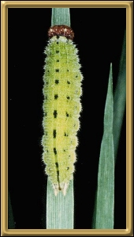
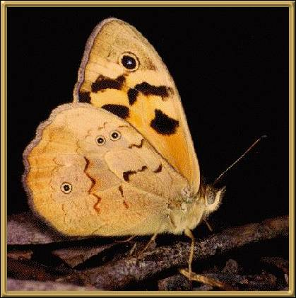

Photographer: Merlin Crossley
Photographs courtesy of: Lepidoptera Larvae of Australia
We see these butterflies all over our garden, particularly on the Buddleia just outside the door, although I don't recall ever finding one of the caterpillars. These butterflies are found through most of south-east Australia.